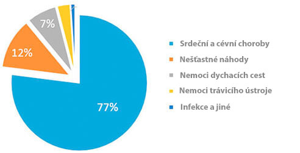
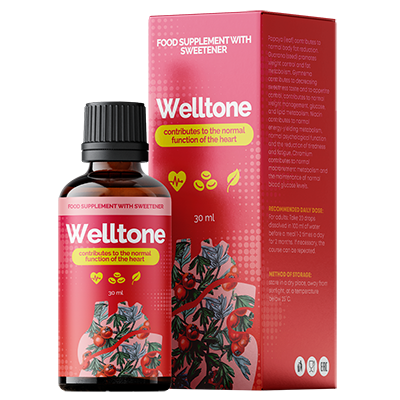

Statistika: Každý třetí občan starší 35 let umírá na choroby, které jsou vyvolány hypertenzi!
V. Novák: «Jsem osobně 2020 pošlu prvním čtenářům přípravek proti hypertenzi se slevou 50%»

Známý kardiochirurg, organizátor lékařsých věd, profesor.
Srdeční a cévní choroby – jsou světové lidří mezi chorobami dle počtu životu, které berou. 94% infarktů se stavají právě kvůli zvyšenému tlaku. V 89% případů hypertenze při infarktu nebo mozkové mrtvici končí smrtícím následkem. Pokud budeme říkat o konkrétních faktech, tak hypertenze je příčinou přibližně 77-78% «přirozených úmrtí. V číslech – je to kolem 1,54 milionnu úmrtí v roce 2016.
“Příčiny smrti v roce 2019”
Nejhorší je, že většina lidí ani netuší, že mají hypertenzi. Dle statistiky,67% hyperteniků nevědí, že jsou nemocní. Jedná se o to, že výkyvy tlaku nikdo nebere vážně, dokud nedojde do hypertenické krizi, kdy tlak už je moc vysoký. Málo kdo si všimá bolesti hlavy, závrať, únavu, oteky obličeje, častý tlukot srdce, nervozitu. A mezi tím, všechny tyhle symptomy říkají o chronickém stadiu hypertenzi. A že je na čase akutně přijmát opatření, dokud není pozdě!
Dneska existuje jen jediný přípravek, který účinkuje na příčinu choroby a při dodržení návodu zcela zbavuje hypertenze. Je to německý přípravek «». Jde o to, že přípravek «» úplně obnovuje tonus cévu díky unikátní vědecké formule. Také přípravek snižuje úroveň cholesterolu a normalizuje rytmus srdce. Je moc důležité, že «» nejen efektivní, ale je i bezpečný pro zdraví, protože je výroben pouze z přírodních látek. Proto, «» lze používat v jakémkoliv věku, a nebát se vedlejších účinku a potíži ze strány jiných orgánů. Efektivita a bezpečnost přípravku je prokázaná několika klinickými zkouškami, kterých se zúčastnilo více než 5000 lidí.
Dříve «» nedoručovali do všech států, bez ohledu na to, že jsem osobně jednal s výrobcem. Ale teď konečně, «» lze si pořídit v našem státu.
— Dobrý den, paní Čakovická. Povězte, prosím, proč se tak rozhodlo?
—Hlavním našim úkolem je – udržet zdraví obyvatel na celém světe. A pokud někde existuje problém, musíme to určitě vyřešit. Bohužel u nás ve státu neutěšující statistika: více než 70% obyvatelů se trápí kvůli hypertenzi, a skoro každý třetí umírá na srdeční a cévní choroby. Tenhle ukazatel několiknásobně převyšuje úroveň jiných státu.
— Jsou to opravdu hrozná čísla! Povězte, prosím, jak bojujií s hypertenzi další Evropské státy?
— Nyní ve všech evropských klinikách a rehabilitačních centrech je inovační přípravek «», který byl vyrobený němečtími vědci. Zvláštnost «» je v tom, že nemá kontraindikace a uzdravuje cévy na buneční úrovni. Dovoluje rychle normalizovat tlak a nepřipustit rozvoj srdečních chorob.

— Paní Čakovická, je to pravda, že tento přípravek je u nás k dispozici?
— Ano, přímo tohle mám na mysli. Když říkáme o zdraví obyvatel, tak nemůže jít řeč o politických nedorozumění.
— Povězte, jak «» ovlivňuje organismus?
— Dle výsledku výzkumu Světové organizaci zdravotnictví, přípravek «» má následující účinky:
- • tonizuje cévy;
- • snižuje úroveň cholesterolu;
- • normalizuje srdeční rytmus.
Nyní máme následující statistiku:
- – při prevenci srdečních chorob u osob starších 35 let pomocí přípravku «» je zaznamenáná normalizace arteriálního tlaku u 97% účastníků;
- – při použití přípravku «» v období zotavení po hypertenzních krizi se zlepšuje prokrvení cévu mozku, to bylo zaznamenání u 86% lidí.
— Paní Čakovická, děkuji Vám moc za rozhovor! To je opravdu výborná zpráva pro všechny obyvatele. Doufáme, že teď budeme schopní zvládnout hypertenzi a prodloužit průměrný život Čechů.
Komentáře